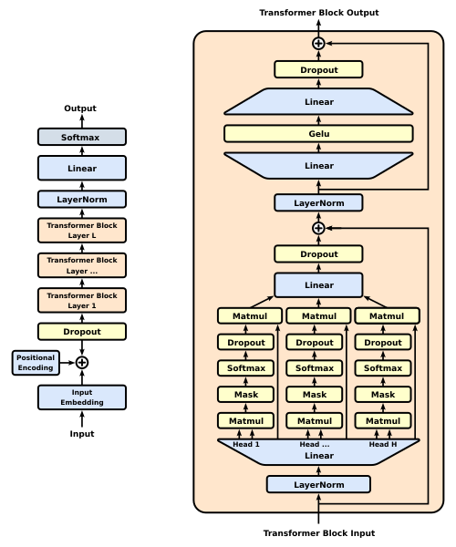

Modelos generativos preentrenados
Los modelos generativos preentrenados son un tipo de modelos de aprendizaje profundo que obtienen conocimiento lingüístico general a partir de datos de texto mediante aprendizaje no supervisado a gran escala, y que pueden generar texto coherente y razonable. Las características principales de este tipo de modelos son:
- Capacidad de generación: pueden generar automáticamente texto nuevo según la entrada (prompt o contexto).
- Paradigma de preentrenamiento + ajuste fino: primero se preentrena con una gran cantidad de datos y luego se ajusta para tareas específicas.
- Arquitectura autorregresiva o autoencodificadora: aprenden las reglas del lenguaje mediante diferentes objetivos de entrenamiento.

1. Historia del desarrollo de la serie de modelos GPT
1.1 GPT-1: un comienzo innovador
GPT-1 (Generative Pre-trained Transformer) fue lanzado por OpenAI en 2018, demostrando por primera vez la efectividad del preentrenamiento no supervisado a gran escala + ajuste fino supervisado.
Características principales：
- Estructura de decodificador Transformer de 12 capas
- 117 millones de parámetros
- Utiliza el conjunto de datos BooksCorpus (aproximadamente 7,000 libros)
- Inauguró el paradigma de dos etapas de 'preentrenamiento + ajuste fino'
1.2 GPT-2: un avance en escala
GPT-2, lanzado en 2019, demostró la correlación positiva entre el tamaño del modelo y el rendimiento.
Mejoras clave：
- Escala de parámetros: 1.5 mil millones (10 veces el de GPT-1)
- Datos de entrenamiento: WebText (8 millones de páginas web, 40 GB de texto)
- Eliminó la etapa de ajuste fino, mostrando la capacidad de aprendizaje zero-shot
- Introdujo una ventana de contexto más larga (1024 tokens)
1.3 GPT-3: de la cantidad a la cualidad
GPT-3, lanzado en 2020, logró la capacidad de aprendizaje few-shot, alcanzando 175 mil millones de parámetros.
Avances revolucionarios：
- Arquitectura del modelo: Transformer de 96 capas
- Datos de entrenamiento: Common Crawl + conjuntos de datos seleccionados (aproximadamente 570 GB)
- Demostró una poderosa capacidad de aprendizaje en contexto (in-context learning)
- Por primera vez, logró completar múltiples tareas de NLP sin necesidad de ajuste fino
1.4 GPT-4 y desarrollos posteriores
GPT-4, lanzado en 2023, amplió aún más los límites de las capacidades del modelo.
Últimos avances：
- Capacidad de procesamiento multimodal (texto + imágenes)
- Memoria de contexto más larga (32k tokens)
- Capacidades mejoradas de razonamiento y seguimiento de instrucciones
- API comercial y ecosistema de complementos
2. Principios de los modelos de lenguaje autorregresivos
2.1 Conceptos básicos
Los modelos de lenguaje autorregresivos (autoregressive) predicen la distribución de probabilidad de la siguiente palabra a partir del contexto anterior:
P(x_t | x_<t) = P(x_t | x_1, x_2, ..., x_{t-1})
2.2 Principios matemáticos
Dada la secuencia de palabras x = (x₁, ..., xₙ), la probabilidad conjunta se descompone como:
P(x) = ∏ P(x_t | x_<t)
Entrenamiento mediante estimación de máxima verosimilitud:
L(θ) = ∑ log P(x_t | x_<t; θ)
2.3 Arquitectura del decodificador Transformer
Componentes clave:
- Atención propia enmascarada: evita la fuga de información
# PyTorch 伪代码 attn_mask = torch.triu(torch.ones(seq_len, seq_len), diagonal=1)
- Codificación posicional: inyecta información de orden de la secuencia
- Red de avance: transformación de características posición por posición
3. Explicación detallada de las técnicas de generación de texto
3.1 Proceso de generación
Flujo típico de generación de texto:

3.2 Comparación de estrategias de decodificación
| Estrategia | Temperatura | Top-k | Top-p | Características |
|---|---|---|---|---|
| Búsqueda codiciosa | - | - | - | Determinismo alto pero carece de diversidad |
| Muestreo aleatorio | Ajustable | Opcional | Opcional | Buena creatividad pero puede ser incoherente |
| Beam Search | - | - | - | Equilibra calidad y diversidad |
3.3 Parámetros de control de generación
Ejemplos de parámetros clave:
Ejemplo
"max_length": 100, # Longitud máxima de generación
"temperature": 0.7, # Controla la aleatoriedad (0-1)
"top_k": 50, # Número de palabras candidatas
"top_p": 0.9, # Umbral de muestreo nuclear
"repetition_penalty": 1.2 # Factor de penalización por repetición
}
4. Fundamentos de Prompt Engineering
4.1 Principios fundamentales
- Claridad: expresa la intención con claridad
- Contexto: proporciona suficiente información de contexto
- Estructuración: utiliza separadores y formatos
- Impulsado por ejemplos: incluye ejemplos few-shot
4.2 Técnicas prácticas
- Configuración de rol：
Eres un ingeniero senior de aprendizaje automático, por favor explica en lenguaje sencillo...
- Descomposición en pasos：
请按以下步骤解决问题： 1. 首先分析... 2. 然后计算... 3. 最后输出...
- Especificación de formato：
请用JSON格式输出，包含字段：summary, keywords, confidence
4.3 Patrones típicos
- Plantilla de instrucciones：
任务：文本分类 输入：{text} 选项：positive, neutral, negative 输出： - **Cadena de pensamiento (CoT)**:
Por favor razona paso a paso: primero... en segundo lugar... por lo tanto, la conclusión es...
5. Ejercicios prácticos
5.1 Generación básica
Ejemplo
generator = pipeline('text-generation', model='gpt2')
prompt = "El desarrollo futuro de la inteligencia artificial"
output = generator(prompt, max_length=100)
print(output[0]['generated_text'])
5.2 Experimentos de ajuste de parámetros
Diseña experimentos comparativos para observar el impacto de diferentes parámetros:
- Fija el prompt y varía la temperature (0.3 vs 0.7 vs 1.2)
- Compara las diferencias de resultados entre top_k=10 y top_k=50
- Prueba el efecto de diferentes max_length en la coherencia de la generación
5.3 Desafíos de optimización de Prompt
Dado un prompt base:
Escribe un artículo sobre el cambio climático.
Direcciones de optimización:
- Añadir configuración de rol
- Especificar la estructura del artículo
- Incluir requisitos de palabras clave
- Establecer restricciones de estilo
Mediante el estudio sistemático de la historia del desarrollo de los modelos GPT, los principios autorregresivos, las técnicas de generación y el Prompt Engineering, los desarrolladores pueden aprovechar mejor las capacidades de los modelos de lenguaje grandes modernos. Se recomienda comenzar con prompts simples, experimentar gradualmente con diferentes parámetros de generación, observar los cambios en el comportamiento del modelo y, finalmente, dominar la metodología para el uso eficiente de la IA generativa.
Otras extensiones